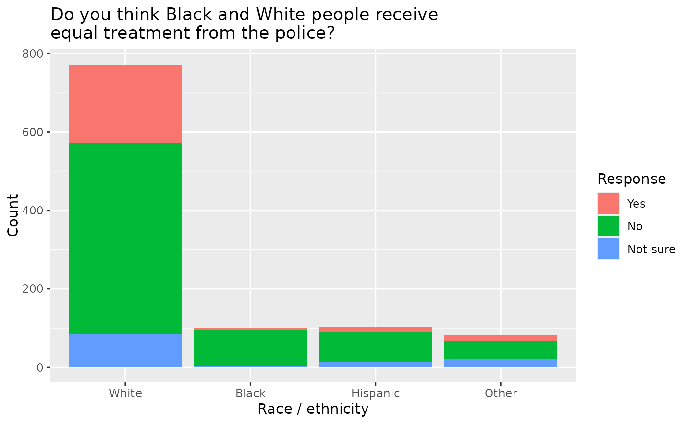
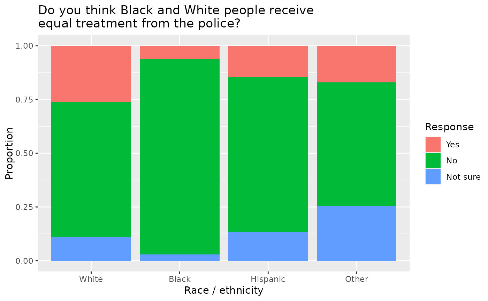

Results from a Yahoo! News poll conducted by YouGov on May 29-39, 2020. In total 1060 U.S. adults were asked a series of questions regarding race and justice in the wake of the killing of George Floyd by a police officer. Results in this data set are percentages for the question, "Do you think Blacks and Whites receive equal treatment from the police?" For this particular question there were 1059 respondents.
race_justice
A data frame with 4 rows and 5 variables.
Race of respondent.
Number of respondents who answered "yes".
Number of respondents who answered "no".
Number of respondents who answered "not sure".
Sample size for each race.
Yahoo! News Race and Justice - May 31, 2020
barplot(race_justice$yes/race_justice$unweighted_n, main = "Do police treat Black citizens and White citizens equally?", xlab = "Race", ylab = "Yes (percent)", names.arg = c("White","Black","Hispanic","Other"))barplot(race_justice$no/race_justice$unweighted_n, main = "Do police treat Black citizens and White citizens equally?", xlab = "Race", ylab = "No (percent)", names.arg = c("White","Black","Hispanic","Other"))